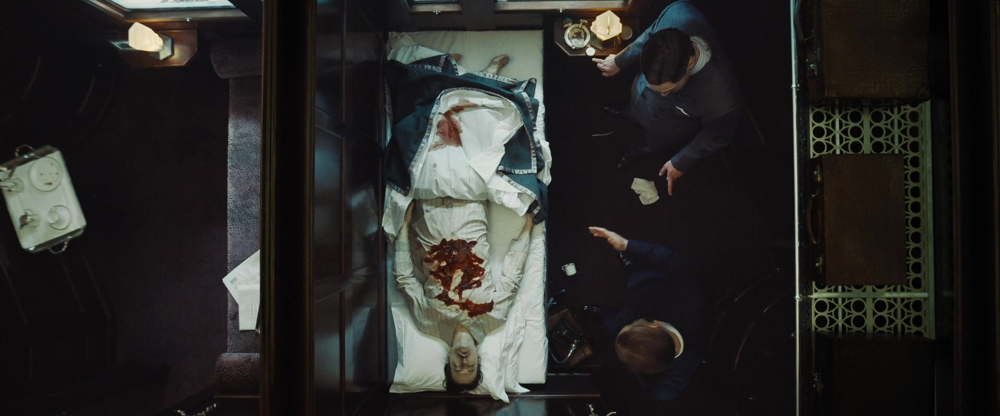
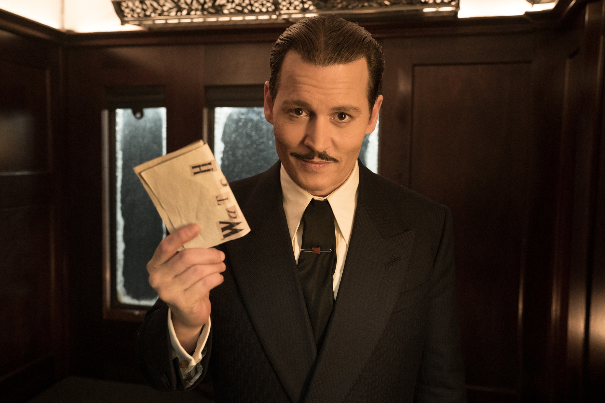

I had a few sleepless nights after I posted my reviews of ‘Death on the Nile’ and ‘Belfast’. Not that I thought I was incorrect in my findings, but I started to wonder about Kenneth Branagh’s original foray into Agatha Christie territory, ‘Murder on the Orient Express’. I remember at the time I wasn’t very impressed with that film either.
I decided to take another look. And what I found was a great surprise. Here Branagh takes the Christie story, with the most horrific and bloody murder, and turns it into an entertaining couple of hours.
 Only one possible explanation: "No ticket"Branagh here presents a much more restrained Poirot than he does in Egypt. There are none of the histrionics and loud outbursts of that man. And his character is all the better for it. [However, I still, must say, I quibble at his moustache. Agatha did not write this large an appendage.]
The story is approached in a straightforward manner, with the necessary flashbacks. Each passenger on the train has his or her motive and we discover each as the movie unfolds.
Locales are excellent this time, and the computer images did not bother me as in the Egyptian opus.
The casting is excellent. Apart from Branagh, who is fine, we have that talented actor, Tom Bateman. He is also splendid in ‘Death on the Nile’. If you want to see more of this actor’s work, check out ‘Vanity Fair’ and ‘Jekyll and Hyde’ on the streaming channels. [Particularly, his ‘Jekyll and Hyde’.]
Johnny Depp makes a marvellous sleaze character and he and Branagh have a fun scene together.
 Would you believe that this is the last film Depp has been in? No joke here, just thought that was worth sharing.Daisy Ridley [who, I think, is Tom Bateman’s wife] is just right. As is Willem Defoe. Judi Dench is in fine ‘grande dame’ form as Princess Dragomiroff, ably supported by Olivia Colman.
And, of course, Penlope Cruz, one of my favourites, gives solid support.
Ms. Cruz plays a difficult role... maid with a Spanish accent. Her range is incredible.But, for me, the greatest performance of the film is given by Michelle Pfeiffer. What a joy to see her back on the screen. We all remember her from the eighties and nineties, but to see her in a mature role and displaying such passion is a revelation.
Brannagh is at his best in the final moments, when the great man must go against all his principles and forsake his life’s discipline to bring the tale to an end.
Once again, Patrick Doyle provides an appropriate music score.
All in all, a pleasant surprise. It’s interesting to go back and relive an earlier experience and discover a different outcome.
 Image caption goes here.
Image caption goes here.
Star Rating: 4/5 [I think I may review some other old favourites of mine.] [I think I may review some other old favourites of mine.]